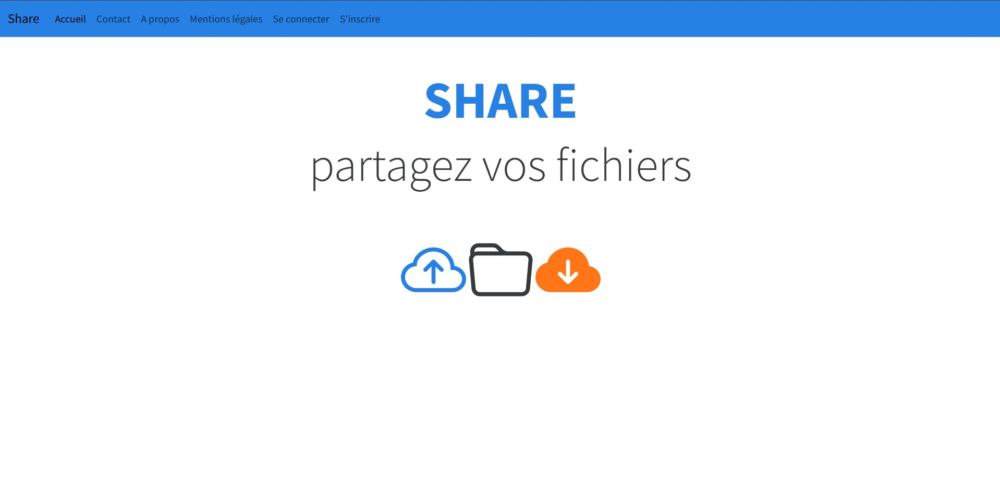

Share
Ce projet est une application web de partage de fichiers. Elle est créée avec le framework Symfony.
Ce projet m'a permi de découvrir le framework Symfony et de me familiariser avec les concepts de la programmation orientée objet. J'ai appris à créer des entités, des contrôleurs, des formulaires et des vues. J'ai également appris à utiliser Doctrine pour interagir avec la base de données.
J'ai pu également créé un système d'authentification et de gestion des rôles.
J'ai utilisé Git pour versionner mon code et GitHub pour héberger mon site. J'ai utilisé Visual studio Code pour développer mon site.
Vous pouvez retrouver le code source de ce projet sur mon GitHub : suivre le lien